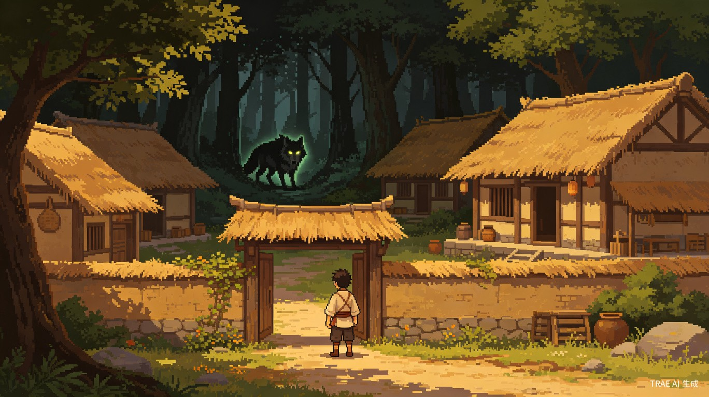

一个人想做一款有完整游戏循环的RPG游戏，但面临技术门槛高、美术资源缺、数值平衡难调等多重困难。传统开发方式周期长、成本高，个人开发者几乎不可能独立完成一款可玩的RPG。
我一直想做一个"接地气"的RPG——新手被一只狼就能咬死，吃个馒头就能回血，打二十多只兔子才攒够钱买一把铁剑。这种朴素的成长感是很多经典网游（热血传奇、传奇世界）最打动人的地方。但一个人从零开发实在太难，直到发现用AI辅助可以大幅降低开发门槛——AI帮我做游戏设计规划、写代码、生成素材，让我能把精力集中在"游戏好不好玩"这件事上。
一款基于Web技术的2D RPG游戏（浏览器直接运行），先做单机版验证核心玩法，架构预留MMO扩展能力，未来可发展为多人在线MMORPG。
喜欢经典RPG/MMORPG的玩家群体，尤其是怀念早期网游"从零成长"体验的用户。年龄层20-35岁，有情怀、有耐心。
想学游戏开发的初学者——这个项目本身就是一份AI辅助游戏开发的完整教程，展示如何用AI工具完成一个完整的游戏项目。
想低成本验证游戏创意的个人开发者，需要一个可快速迭代的原型工具。
这个项目完整展示了AI辅助开发的流程——用AI生成游戏设计文档（包含8大核心系统设计、完整数值表、技术架构图、4阶段开发路线图）、用AI编写游戏代码、用AI生成像素美术素材。传统需要一个小团队数月完成的游戏规划工作，在AI辅助下一个人几天就能完成，开发效率提升数倍。
| 开发环节 | 传统方式 | AI辅助方式 | 效率提升 |
|---|---|---|---|
| 游戏设计文档 | 策划1-2周 | AI生成+人工审核 1天 | 10x |
| 代码编写 | 程序员2-4周 | AI生成+人工调试 3-5天 | 5x |
| 美术素材 | 美术师1-2周 | AI生成 半天 | 20x |
| 数值平衡 | 策划反复测试 1周 | JSON配置+快速迭代 1天 | 5x |
Web技术开发的RPG游戏天然具备"发个链接就能玩"的传播优势，获客成本极低。接地气的中国风题材+朴素的成长系统，精准击中怀旧玩家群体。先做单机版验证玩法，再扩展为MMO，逐步构建用户社区和商业化能力，是一条低风险、可验证的创业路径。
浏览器直接运行，无需下载，分享链接即可邀请好友
数据驱动设计，修改数值只需改JSON，无需重新编译
单机→联机→MMO，逐步验证每一步的商业可行性
| 层级 | 技术 | 说明 |
|---|---|---|
| 游戏引擎 | Phaser 3 | 成熟HTML5 2D框架，内置物理、动画、Tilemap支持 |
| 编程语言 | TypeScript | 类型安全，IDE支持好，适合中大型项目 |
| 地图编辑 | Tiled Map Editor | 免费开源，导出JSON，Phaser原生支持 |
| 构建工具 | Vite | 快速开发服务器和构建 |
| 数据存储 | LocalStorage | 单机版存档 |
| MMO后端（预留） | Node.js + WebSocket | 与前端同语言，生态丰富 |
馒头（恢复15HP）、包子（恢复30HP）、金疮药（恢复50HP）
野兔、野鸡、野狼、毒蛇、山贼、灰狼王（Boss）
木剑（攻击+3）、柴刀（攻击+5）、铁剑（攻击+8）
铜钱（基础货币）、银两（高级货币）、金元宝（MMO阶段）
| 职业 | 描述 | HP | MP | 攻击 | 防御 | 速度 |
|---|---|---|---|---|---|---|
| 剑客 | 近战物理输出，血厚攻高 | 120 | 20 | 12 | 8 | 7 |
| 术士 | 远程法术输出，脆皮高伤 | 60 | 80 | 6 | 4 | 8 |
| 猎人 | 远程物理输出，攻速快 | 80 | 40 | 10 | 5 | 12 |
| 郎中 | 治疗辅助，可回血解毒 | 70 | 60 | 5 | 6 | 9 |
exp(n) = 50 * n^1.5，保证前期升级快、后期越来越慢。
验证"探索-战斗-成长"核心循环是否有趣。
补齐所有核心系统，形成可玩的游戏。
丰富内容，提升品质。
改造为多人在线MMORPG。
本项目完整展示了AI辅助游戏开发的全流程，以下是已完成的成果：
AI生成包含8大核心系统、完整数值表、技术架构图的详细规划文档
AI编写Phaser 3 + TypeScript游戏代码，包含战斗、背包、存档系统
AI生成像素风格游戏封面图、场景概念图
AI设计经验曲线、伤害公式、经济系统，确保游戏有挑战性但不挫败
《江湖从零开始》不仅是一款游戏，更是一个AI辅助创作的实验。它证明了一个人借助AI工具，也能完成从前只有专业团队才能做到的事情。从"被一只狼咬死"的新手，到"独闯江湖"的高手——这不仅是游戏中角色的成长，也是每一个想用AI实现创意的人的成长之路。